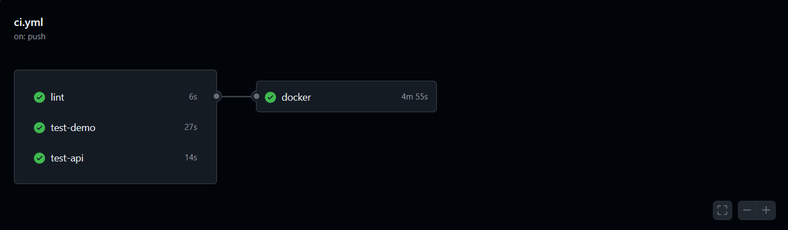
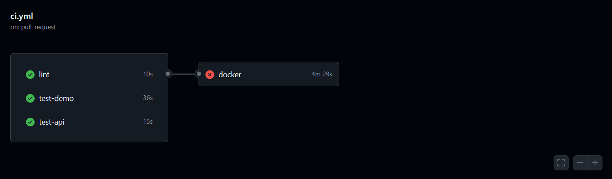
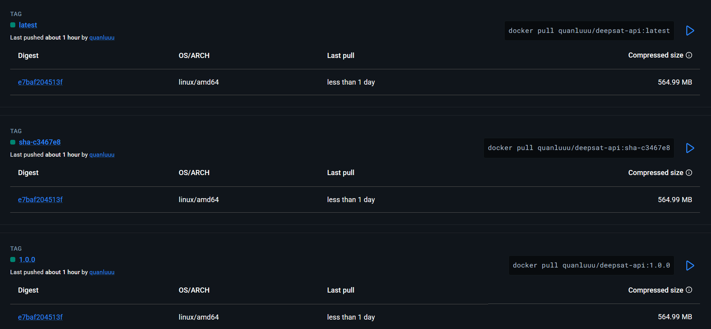
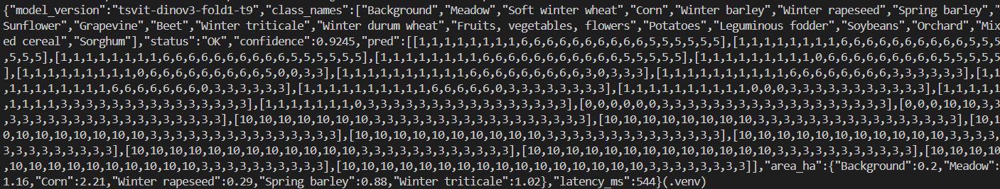

Hướng dẫn step-by-step: lint, test, build image model AI, push public lên Docker Hub, chạy và kiểm tra
| Repository | https://github.com/quanluuu/DeepSatModels |
|---|---|
| Docker Hub | https://hub.docker.com/r/quanluuu/deepsat-api https://hub.docker.com/r/quanluuu/deepsat-demo |
| Phiên bản | Image 1.0.0 (commit c3467e8), model tsvit-dinov3-fold1-t9 |
| Ngày | 04/11/2026 |
Quy ước cho mọi bước: Chạy ở (máy và thư mục), Lệnh, Kết quả đúng. Mọi lệnh và số liệu trong tài liệu này đã được chạy và đo thật trên repo.
TSViT_DINOv3, fold 1, run T9; input một cửa sổ 24 × 24 pixel, tối đa 60 ngày chụp, 10 band.quanluuu/deepsat-api chạy model trên CPU qua FastAPI. quanluuu/deepsat-demo là app Streamlit dùng kết quả tính sẵn.main. Job docker build cả 2 image và smoke test chúng. Trên push, job này còn push image lên Docker Hub.
Developer ──git push / PR──▶ GitHub repo (quanluuu/DeepSatModels)
│
▼
GitHub Actions workflow .github/workflows/ci.yml
┌──────────┐ ┌────────────────────────┐ ┌──────────────────────────┐
│ lint │ │ test-demo (Python 3.13)│ │ test-api (Python 3.11) │
│ ruff │ │ 20 unit + 4 AppTest │ │ 22 test, stub predictor │
└────┬─────┘ └───────────┬────────────┘ └────────────┬─────────────┘
└────────────────────┼────────────────────────────┘ needs: cả 3 xanh
▼
┌──────────────────────────────────────────────────────────────────────┐
│ docker: tải best.pth (Release weights-v1) ─▶ sha256sum -c │
│ clone dinov3 @6876159 ─▶ buildx build api + demo (cache gha) │
│ kiểm kích thước ─▶ load model --network none ─▶ smoke test │
│ chỉ khi event = push: login + push tag latest / sha- / semver │
└──────────────────────────────┬───────────────────────────────────────┘
▼
Docker Hub: quanluuu/deepsat-api, quanluuu/deepsat-demo (public)
│ docker pull (không cần login)
▼
Máy người dùng: docker run -p 8000:8000 ─▶ GET /health, POST /predict
docker run -p 8501:8501 ─▶ trình duyệt http://localhost:8501
| Thành phần | File | Vai trò |
|---|---|---|
| Workflow | .github/workflows/ci.yml | 4 job: lint, test-demo, test-api, docker |
| Image API | docker/api.Dockerfile | Python 3.11, torch CPU, model + FastAPI, cổng 8000 |
| Image demo | docker/demo.Dockerfile | Python 3.13, Streamlit, cổng 8501, không chứa model |
| API | api/main.py, api/predictor.py | /health, /predict, trạng thái OK / UNCERTAIN / FALLBACK |
| Smoke test | scripts/smoke_api.py | Kiểm contract của API đang chạy, chỉ dùng thư viện chuẩn |
| Weights | Release weights-v1, weights/SHA256SUMS | Checkpoint 89 MB, không commit vào git |
| Load test | tests/load/predict.js | k6, 5 VUs × 2 phút |
| Nơi chạy | Thành phần | Version đã test |
|---|---|---|
| GitHub Actions | Runner | ubuntu-latest |
| Actions | checkout@v4, setup-python@v5, setup-buildx-action@v3, metadata-action@v5, build-push-action@v6, login-action@v3 | |
| Image API | Base | python:3.11-slim |
| Thư viện | torch + torchvision bản CPU (index download.pytorch.org/whl/cpu), fastapi ≥ 0.162, uvicorn ≥ 0.54, python-multipart ≥ 0.0.32 | |
| Image demo | Base | python:3.13-slim |
| Thư viện | streamlit ≥ 1.40, numpy, folium ≥ 0.17, streamlit-folium ≥ 0.22 | |
| Máy tác giả | OS | Windows 11 Home 10.0.26200 |
Python (venv .venv) | 3.13.3; torch 2.11.0, fastapi 0.162.0, streamlit 1.66.0, numpy 2.5.2 | |
| Công cụ | git 2.53.0, ruff 0.17.3, pytest ≥ 9.2, k6 v2.3.0 | |
| Docker | Không cài được Docker Desktop (lỗi DISM 14098 khi bật tính năng Windows). Mọi bước docker build/run chạy trên runner GitHub Actions. Xem mục 12. |
quanluuudeepsat-api → Visibility Public → Create. Lặp lại với deepsat-demo.github-actions-deepsat → Access permissions Read & Write → Generate. Sao chép token ngay; Docker Hub chỉ hiện token một lần.dckr_pat_.Không dán token vào chat, file trong repo hay ảnh chụp. Dùng token thay mật khẩu để có thể thu hồi riêng mà không đổi mật khẩu tài khoản.
| Name | Value |
|---|---|
DOCKERHUB_USERNAME | quanluuu |
DOCKERHUB_TOKEN | token ở bước 4.2 |
*** thay cho giá trị.Checkpoint best.pth nặng 89 MB, vượt giới hạn 50 MB khuyến nghị cho một file trong git, nên được lưu làm asset của Release. .gitignore chặn weights/* và chỉ cho phép weights/SHA256SUMS.
sha256sum weights/best.pth
eef5b7807f4f8ef60972a5bddf2f4ca82f033652df030ca4868a43f6242bf695 weights/best.pth
weights-v1 → kéo thả best.pth vào ô Attach binaries → Publish release.https://github.com/quanluuu/DeepSatModels/releases/download/weights-v1/best.pth (89.0 MB)
Code DINOv3 không đưa vào Release. Job CI clone nó trực tiếp từ GitHub ở commit cố định 6876159a11b4df116f30f667f8c9888617df0751. Weights của backbone đã nằm sẵn trong checkpoint.
Workflow chạy khi push vào main, push tag v*.*.*, hoặc mở PR vào main. Các cấu hình chính:
permissions: contents: read: job không có quyền ghi vào repo.concurrency: khi có commit mới trên cùng ref, run cũ bị huỷ.test-api chạy với stub predictor, nên không cần cài torch. Nhờ vậy job chỉ mất khoảng 15 giây.jobs:
lint: ruff check app tests api scripts # ruff==0.17.3, line-length 150
test-demo: pytest -q tests/test_demo_core.py tests/test_app.py # Python 3.13, requirements.txt
test-api: pytest -q tests/test_api.py # Python 3.11, api/requirements.txt
docker: needs: [lint, test-demo, test-api] # xem mục 6, 7pip install -r requirements.txt -r api/requirements.txt -r requirements-dev.txt ruff check app tests api scripts pytest -q
All checks passed! .............................................. [100%] 46 passed in 4.64s
git checkout -b ci-cd git push -u origin ci-cd # GitHub → Compare & pull request → base: main → Create pull request
88d3a2d, run 41676612401) mất 159 giây tổng cộng.
Run 41675324940 (PR #2, commit 08bb277) đỏ ở bước Smoke test demo container của job docker. Ba job lint và test vẫn xanh. Vì smoke test fail, 3 bước login và push bị skipped, nên không có image lỗi nào lên Docker Hub.
docker-proxy nhận kết nối rồi reset ngay khi Streamlit chưa listen. curl --retry-connrefused không retry lỗi reset.88d3a2d đổi sang curl --retry 45 --retry-all-errors --retry-delay 2. Run sau đó xanh.
| Run | Event | Commit | Kết quả | Thời gian |
|---|---|---|---|---|
| 41672753414 | pull_request | ae2caed | success | 49 s (chưa có job docker) |
| 41675324940 | pull_request | 08bb277 | failure | 314 s |
| 41676612401 | pull_request | 88d3a2d | success | 159 s |
| 41678224175 | push main | c3467e8 | success | 330 s (có push) |
| 41679938304 | push tag v1.0.0 | c3467e8 | success | 164 s (cache gha) |
docker/api.Dockerfile| Khối | Giải thích |
|---|---|
FROM python:3.11-slim | Base nhỏ, chọn Python 3.11 vì code DINOv3 và torch CPU đã test với bản này. |
ARG MODEL_VERSION, ENV ... | Giá trị mặc định của các biến env mà API đọc. Tên biến giống .env.example, và có thể ghi đè bằng docker run -e. |
LABEL org.opencontainers.image.* | Ghi tên, version model và license vào metadata của image. |
RUN pip install torch torchvision --index-url .../whl/cpu | Cài torch bản CPU trước, nên requirements_dinov3.txt không kéo bản CUDA về. Bản CUDA nặng thêm vài GB. |
COPY requirements... ; RUN pip install | Cài thư viện trước khi copy code: sửa code không làm mất cache của layer thư viện. |
RUN useradd app, USER app | Container không chạy bằng root. |
WORKDIR /srv, các lệnh COPY | Chỉ copy những gì inference cần: models/, utils/, data/, config yaml, app/demo_core.py, api/, weights/best.pth, weights/dinov3/. .dockerignore là allowlist nên dataset, .venv và .git không vào build context. |
HEALTHCHECK | Gọi /health mỗi 30 giây. start-period=90s để chờ load model. |
CMD uvicorn --factory api.main:create_app | Model được load khi server khởi động, không load lúc import module. |
docker/demo.Dockerfile| Khối | Giải thích |
|---|---|
FROM python:3.13-slim | Cùng version Python với job test-demo. |
STREAMLIT_BROWSER_GATHER_USAGE_STATS=false | Tắt gửi thống kê sử dụng. |
COPY app/crop_recognition_app.py app/demo_core.py, app/data/demo_patches.npz | Chỉ app và kết quả tính sẵn cho 25 patch. Image không chứa torch và model. |
HEALTHCHECK /_stcore/health | Endpoint health có sẵn của Streamlit. |
dockerubuntu-latest của GitHub Actions (tự động)gh release download weights-v1 --pattern best.pth --dir weights
cd weights && sha256sum -c SHA256SUMS
git init -q weights/dinov3
git -C weights/dinov3 fetch -q --depth 1 https://github.com/facebookresearch/dinov3.git 6876159a11b4df116f30f667f8c9888617df0751
git -C weights/dinov3 checkout -q FETCH_HEAD
# docker/build-push-action@v6: load: true, cache-from/cache-to: type=gha
docker build -f docker/api.Dockerfile -t deepsat-api:ci .
docker build -f docker/demo.Dockerfile -t deepsat-demo:ci .best.pth: OK. Thời gian đo ở run 41678224175 (chưa có cache): build API 165 s, build demo 55 s.test "$api" -lt 2684354560 && test "$demo" -lt 629145600 # API < 2.5 GB, demo < 600 MB
docker run --rm --network none deepsat-api:ci python -c "from api.predictor import Predictor; p = Predictor.from_env(); print('loaded', p.model_version)"
docker run -d --name api -p 8000:8000 deepsat-api:ci
python3 scripts/smoke_api.py http://localhost:8000 --wait 180
docker run -d --name demo -p 8501:8501 deepsat-demo:ci
curl -fsS --retry 45 --retry-all-errors --retry-delay 2 http://localhost:8501/_stcore/health--network none chứng minh model load được mà không cần mạng, tức image đã chứa đủ weights.Các bước push có điều kiện if: env.PUSH == 'true', với PUSH = github.event_name == 'push'. Vì vậy PR chỉ build và test. Push lên main hoặc push tag mới đưa image lên Docker Hub.
- uses: docker/metadata-action@v5
with:
images: quanluuu/deepsat-api
tags: |
type=raw,value=latest,enable={{is_default_branch}} # chỉ khi push main
type=sha,prefix=sha-,format=short # sha-c3467e8
type=semver,pattern={{version}} # tag git v1.0.0 -> 1.0.0
- uses: docker/login-action@v3
with:
username: ${{ secrets.DOCKERHUB_USERNAME }}
password: ${{ secrets.DOCKERHUB_TOKEN }}
- uses: docker/build-push-action@v6
with: { push: true, tags: ${{ steps.meta-api.outputs.tags }}, cache-from: type=gha,scope=api }latest và sha- bằng merge PRc3467e8) xanh. Bước push API mất 17 s, bước push demo mất 10 s. Docker Hub có tag latest và sha-c3467e8.1.0.0main đã pull mới nhấtgit tag v1.0.0 git push origin v1.0.0
1.0.0. Không có tag latest mới, vì tag git không phải default branch.| Image | Tag | Digest | Kích thước nén |
|---|---|---|---|
quanluuu/deepsat-api | 1.0.0, latest, sha-c3467e8 | sha256:46a1357cc685… | 565 MB |
quanluuu/deepsat-demo | 1.0.0, latest, sha-c3467e8 | sha256:ebcb1fef9764… | 176 MB |
Ba tag của mỗi image trỏ cùng một digest, vì cùng commit c3467e8. Số liệu lấy từ API công khai hub.docker.com/v2/repositories/quanluuu/<repo>/tags.

Image public nên docker pull không cần login. Các lệnh dưới đây là những lệnh job docker đã chạy trên runner. Trên máy tác giả không có Docker, nên API được chạy trực tiếp bằng uvicorn, cùng code và cùng weights (bước 8.5).
docker pull quanluuu/deepsat-api:1.0.0 docker run -d --name deepsat-api -p 8000:8000 quanluuu/deepsat-api:1.0.0
docker ps hiện (healthy). Trong job CI, smoke test API hoàn tất 7 s sau khi container khởi động./healthcurl http://localhost:8000/health
{"status":"ok","model_version":"tsvit-dinov3-fold1-t9","device":"cpu"}
/predict với file mẫutests/fixtures/window.npz: patch 10109, cửa sổ 0, 43 ngày)curl -X POST http://localhost:8000/predict -F file=@tests/fixtures/window.npz
pred 24 × 24 và class_names 19 tên):{"model_version": "tsvit-dinov3-fold1-t9", "class_names": ["Background", "Meadow", "Soft winter wheat", "..."],
"status": "OK", "confidence": 0.9245, "pred": [[1, 1, 1, 1, 1, 1, ...], ...],
"area_ha": {"Background": 0.2, "Meadow": 1.16, "Corn": 2.21, "Winter rapeseed": 0.29,
"Spring barley": 0.88, "Winter triticale": 1.02},
"latency_ms": 554}
pred khớp 576/576 pixel với kết quả tính sẵn của demo. latency_ms thay đổi theo máy; trên CPU tác giả là 0.5–1.7 s.

POST /predict.curl -X POST http://localhost:8000/predict -F file=@README.md python scripts/smoke_api.py http://localhost:8000
{"detail":"not a valid .npz file"} (HTTP 422)
PASS /health ok with model_version: {'status': 'ok', 'model_version': 'tsvit-dinov3-fold1-t9', 'device': 'cpu'}
PASS /predict returns 200 (got 200)
PASS /predict status OK or UNCERTAIN (got OK)
PASS pred is 24x24
PASS pred values in 0..18
PASS model_version matches /health
confidence 0.9245, latency_ms 592
PASS invalid file rejected with 422 (got 422)
smoke test passed
requirements_dinov3.txt và api/requirements.txt; đã tải best.pth vào weights/ và clone dinov3 vào weights/dinov3 như bước 6.3uvicorn --factory api.main:create_app --host 127.0.0.1 --port 8000
Uvicorn running on http://127.0.0.1:8000. Sau đó các bước 8.2–8.4 cho cùng kết quả.docker run -d --name deepsat-demo -p 8501:8501 quanluuu/deepsat-demo:1.0.0 curl http://localhost:8501/_stcore/health
ok. Mở http://localhost:8501, chọn vùng và bấm Analyze: app hiện bản đồ cây trồng và bảng diện tích (ha).